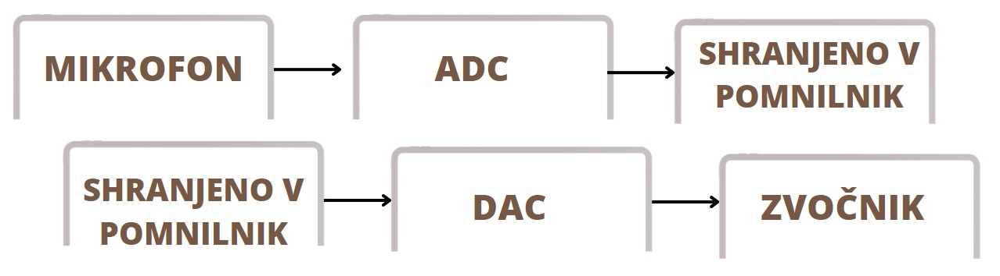

Vsakdanji zvočni signali so analogni podatki. Ker pa računalnik hrani samo digitalne podatke, potrebujemo pretvorbo.
Spoznavamo ADP in DAP (analogno-digitalni pretvornik in digitalno-analogni pretvornik), katera pretvarjata podatke v potrebno.
Za zvok je značilno VALOVNO KODIRANJE; prikazovanje zvoka s pomočjo velikosti zvočnih valov.

Ko imamo zvok predstavljen z zvočnimi vali (graf), se ta skozi analogno – digitalno pretvorbo spremeni v stopničast graf.
Ko se zgodi obratna pot, iz digitalnega v analogno, se graf spremeni v krivuljo, pri tem pa ima manjša odstopanja od osnovnega zapisanega zvoka (začetni in končni graf sta si podobna, ne pa povsem enaka). Ker se zvok shrani v pomnilnik, velja to pravilo. Bolj natančne meritve kot želimo imeti, več prostora bo meritev zasedla. Natančnost je odvisna od tega koliko bitna je zvočna kartica, ki je pomembna pri pretvorbi. Če bo pretvorba bolj natančna bomo imeli manj izgube. (npr. 8 – bitna zvočna kartica := 256, torej lahko zapiše zvok z 256 različnimi vali)
POSTOPEK PREDSTAVITVE:
Mikrofon posname zvočni signal. Ta se, za zapis v računalnik, more pretvoriti v digitalni signal. Tu se pojavi že navedena zvočna kartica, ADP in tako, ko to postane digitalni signal, se lahko shrani v pomnilnik kot zaporedje bitov v obliki dvojiškega zapisa. Ko želimo podatek dobiti nazaj moramo uporabiti DAP, tako iz zapisa, ki je digitalno zapisan v pomnilniku, pretvorimo v analogni in tako ga spustimo skozi zvočnik. Ta spušča vibracije, kar naše uho posledično sliši kot zvok.